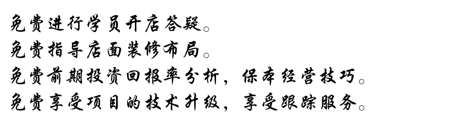

公众号
公众号
 微信号
微信号
特色火锅
一、简介
特色火锅口味： 酸辣鲜椒锅 营养三鲜锅 酸萝卜老鸭锅
棒子大骨汤锅 八宝炖鸡锅 菌王汤锅 椒麻鲜香锅
番茄牛腩汤锅 滋补药膳汤锅 猪肚鸡汤锅 五谷杂粮锅
八宝炖鸡锅 锅型特点：
味道鲜香为主，主料味中国传统主食的八宝，健康养身，口感清淡，吃后身体感觉舒适，适用于喜欢吃清淡食品的人群，适用于注重饮食习惯，健康养生者适用。
棒子骨锅 锅型特点：
味道以骨汤鲜味为主，煮菜喝汤的同时还可以啃几根棒子骨，骨头里面灌着浓浓的骨头汤味道，适用于比较喜欢吃骨头和喝骨头汤的人士，煮菜的味道也会有骨头的味道，鲜香可口！
番茄牛腩锅 锅型特点：
味道主要以甜酸鲜为主，番茄熬出的浓浓的番茄汁配上牛腩的肉味，吃上一口牛肉，喝上一口酸甜可口的番茄汁绝对为无上的美味，适用于不太喜欢吃辛辣的又比较喜欢吃味道的人群，年长者或者小孩都适用。
酸辣鲜椒锅 锅型特点：
味道主要以酸辣麻为主，酸辣味不仅提味，而且可以使人开胃，选择此锅味型者一般都会吃饭“风卷残云”，烫菜的过程中夹杂一片开胃的酸菜，绝对的你值得的选择，适用于比较喜欢吃味道的，口味比较重的人群！
菌王汤锅 锅型特点：
味道主要是以菌类的味道为主，混合十多种目前市场上人们比较喜欢擅长吃的菌类，菇类熬制成的浓汤，喝一口绝对提神醒脑，并且菇类搭配其他的菜品可以让其他菜品更加的鲜美，适用于比较喜欢吃清淡口味的人群！
三鲜汤锅 锅型特点：
味道主要以传统的三鲜口味为主，三鲜汤对高汤的兑制以及菜品的处理非常的注重，吃菜的同时喝一口新鲜的美味的汤，实属口感唯一，适用于不能吃辣椒的人群，适用于老年人以及年轻小孩！
椒麻鲜香锅 锅型特点：
味道主要以麻为主，以鲜香辣为辅，花椒不仅可以增加食品中的麻味，还可以提供食品更多的鲜香味道，花椒麻麻的味道在嘴巴留香实属难得，味道主要适用于川内的人群，比较吃麻的，口味比较重的人群！
酸萝卜老鸭汤 锅型特点：
味道主要以酸萝卜的酸辣味以及老鸭的肉香味混合在一起的味道，吃一口酸萝卜然后喝一口酸酸辣辣的老鸭汤，味道确实巴适！酸味可以提神开胃，对其他菜品的销售有着推波助澜的效果，适用于全年龄段的人群，特别在冬季，实属全家聚餐最好的锅型选择！
五谷杂粮锅 锅型特点：
味道主要以中国传统的五谷杂粮进行调味，锅底还可以配置相关的粥底，可以做到吃粥喝汤两不误，适用于比较喜欢吃传统粮食和不太喜欢吃创新口味的人群！
猪肚鸡汤锅 锅型特点：
猪肚为猪科动物猪的胃，具有治虚劳羸弱，泄泻，下痢，消渴，小便频数，小儿疳积的功效，同时能用猪肚烹调出各种美食。鸡汤的功效不言而喻，此锅味道选美，吃太多会稍显油腻，可配泡菜调味，此锅适用于老年人群！
滋补药膳锅 锅型特点：
中国药膳，博大精深，药膳锅混合十多种中药材加上部分滋补膳食，锅内营养成分十分丰富，此锅口味以滋补味道为主，适用于比较善于吃滋补味道的人群，此锅秋冬两季使用效果更加良好！
二、学习内容：
★特色火锅教学内容：
1、火锅原材料的选择和应用。
2、香料的识别和选用。
3、火锅底料制作及对油温的掌握 。
4、火锅老油的制作以及保管。
5、菜品的选购，加工以及保管。
6、菜品腌粉码味技术以及保管。
7、火锅高汤的制作及高汤原料的选择。
8、火锅底锅的配制，兑制麻辣火锅、鸳鸯火锅的方法。
9、火锅味碟的调制。
10、火锅原材料采购成本控制的方法。

